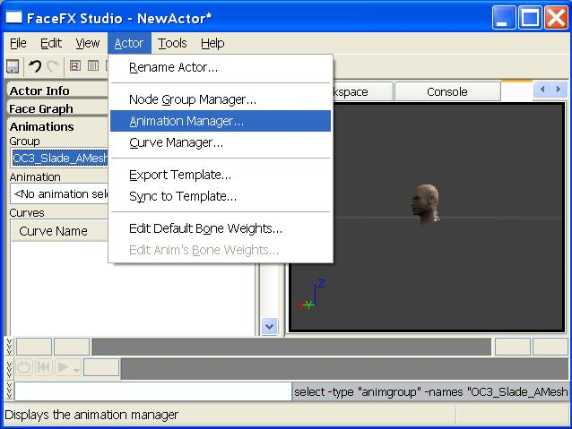

UDN
Search public documentation:
FaceFXExternalAnimSetsCH
English Translation
日本語訳
한국어
Interested in the Unreal Engine?
Visit the Unreal Technology site.
Looking for jobs and company info?
Check out the Epic games site.
Questions about support via UDN?
Contact the UDN Staff
日本語訳
한국어
Interested in the Unreal Engine?
Visit the Unreal Technology site.
Looking for jobs and company info?
Check out the Epic games site.
Questions about support via UDN?
Contact the UDN Staff
UE3 主页 > FaceFX面部动画 >FaceFX外部动画集
FaceFX外部动画集
概述
创建外部动画集
 在弹出的对话框中，输入Package（文件包）和Group（组）信息，并为外部动画集（External Animation Set）命名。点击OK按钮。要想查看新的动画集，你必须完全刷新内容浏览器(Ctrl+F5)。
此时，外部动画集（External Animation Set）被添加到FaceFX Asset（FaceFX资源）上，供创建之用。尽管它可能与任何FaceFX Asset（FaceFX资源）相关联，但是外部动画集（External Animation Set）需要指定一个默认的FaceFX Asset（FaceFX资源），使其了解使用哪个角色模型。通过右击新创建的外部动画集（External Animation Set），并选择“Properties（属性）”，即可修改默认的FaceFX Asset（FaceFX资源）。
在弹出的对话框中，输入Package（文件包）和Group（组）信息，并为外部动画集（External Animation Set）命名。点击OK按钮。要想查看新的动画集，你必须完全刷新内容浏览器(Ctrl+F5)。
此时，外部动画集（External Animation Set）被添加到FaceFX Asset（FaceFX资源）上，供创建之用。尽管它可能与任何FaceFX Asset（FaceFX资源）相关联，但是外部动画集（External Animation Set）需要指定一个默认的FaceFX Asset（FaceFX资源），使其了解使用哪个角色模型。通过右击新创建的外部动画集（External Animation Set），并选择“Properties（属性）”，即可修改默认的FaceFX Asset（FaceFX资源）。

打开FaceFX Studio中的外部动画集
 注意在上述截图中的外部动画集（External Animation Set）显示为一种动画组。从用户角度看，已安装的外部动画集（External Animation Set）与动画组之间没有直观差异。然而本质上，动画组是被存储在FaceFX Asset（FaceFX资源）中，而外部动画集（External Animation Set）是被存储在Unreal文件包中的任何其他地方。
您每次仅可操作一个来自UnrealEd的外部动画集（External Animation Set）。然而在游戏中，您可以将多个外部动画集（External Animation Set）动态安装到一个FaceFX Asset（FaceFX资源）上。
注意在上述截图中的外部动画集（External Animation Set）显示为一种动画组。从用户角度看，已安装的外部动画集（External Animation Set）与动画组之间没有直观差异。然而本质上，动画组是被存储在FaceFX Asset（FaceFX资源）中，而外部动画集（External Animation Set）是被存储在Unreal文件包中的任何其他地方。
您每次仅可操作一个来自UnrealEd的外部动画集（External Animation Set）。然而在游戏中，您可以将多个外部动画集（External Animation Set）动态安装到一个FaceFX Asset（FaceFX资源）上。
添加动画至外部动画集中

通过动画管理器，从左侧的动画组下拉列表中选择外部动画集（External Animation Set）。在下列截图中点击带有两个向左箭头的按钮，即可将默认组中的Silence_Loop动画转移到外部动画集（External Animation Set）中。 点击“Create Animation（创建动画）...”按钮，并执行Create Animation Wizard（创建动画向导），即可通过声音提示来创建新的动画。确保外部动画集（External Animation Set）被选作Animation Manager（动画管理器）对话框左上侧的Primary Animation Group（首选动画组）。在下列截图中，通过分析在OC3_Slade文件包中存储的“welcome（欢迎）”声音提示，“welcome_external”动画已经添加到外部动画集（External Animation Set）中。